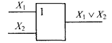
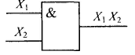
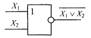
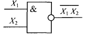
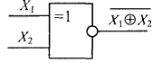
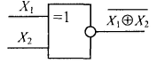
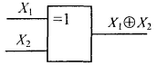
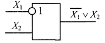
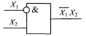

2.1.4. Логические основы
Теоретической основой компьютерной схемотехники является алгебра логики — наука, которая использует математические методы для решения логических задач. Алгебру логики называют булевой в честь английского математика Дж. Буля, внесшего наибольший вклад в развитие этой науки.
Основным предметом булевой алгебры является высказывание — простое предложение, о котором можно утверждать: истинно (обозначают символом 1) или ложно (обозначают символом 0).
Обычно простые высказывания обозначают буквами, например, Х1, Х2, ..., Хn, которые в компьютерной схемотехнике называют переменными (аргументами). С помощью логических связок НЕ, ИЛИ, И, ЕСЛИ..., ТО... строят сложные высказывания, которые называют булевыми (логическими) функциями и обозначают буквами F, L, К, М, Р и др.
В настоящее время главная задача алгебры логики — анализ, синтез и структурное моделирование любых дискретных конечных систем. Аппарат булевой алгебры распространяется на объекты самой различной природы безотносительно их сути, лишь бы они характеризовались двумя значениями или состояниями: контакт включен или выключен, наличие высокого или низкого уровня электрического напряжения, выполнение или невыполнение некоторого условия работы и т.д.
Использование аппарата алгебры логики в компьютерной схемотехнике основано на том, что цифровые элементы характеризуются двумя состояниями и благодаря этому могут быть описаны булевыми функциями. Стандарт ДСТУ 2533-94 "Арифметические и логические операции. Термины и определения" конкретизировал основные понятия булевой алгебры в системах обработки информации.
Переменную с конечным числом значений (состояний) называют переключательной, а с двумя состояниями — булевой. Функция, которая имеет как и каждая ее переменная конечное число значений, называется переключательной (логической). Логическая функция, число возможных значений которой и каждой ее независимой переменой равно двум, является булевой. Таким образом, булева функция — это частный случай переключательной.
Операция — это четко определенное действие над одним или несколькими операндами, которое создает новый объект (результат). В булевой операции операнды и результат принимают "булево значение 1" (далее просто значение 1) и "булево значение 0" (далее просто значение 0). Булеву операцию над одним операндом называют одноместной, над двумя — двуместной и т.д.
Булевы функции одного и двух аргументов называют элементарными. Схему, которая осуществляет элементарную логическую операцию, называют логическим элементом (вентилем). Совокупность взаимозависимых логических элементов с формальными методами описания называется логической схемой.
Названия и условные графические обозначения основных логических элементов, применяемых в компьютерной схемотехнике, представлены в табл. 16.1. Значения переменных (операндов) отображаются электрическими сигналами с двумя четко выраженными уровнями значений.
| Название операций | Название элемента | Условное графическое обозначение |
|---|---|---|
| Отрицание | НЕ |  |
| Дизъюнкция | ИЛИ |  |
| Конъюнкция | И |  |
| Отрицание дизъюнкции | НЕ ИЛИ |  |
| Отрицание конъюнкции | НЕ И |  |
| Эквивалентность | Эквивалентность |  |
| Отрицание эквивалентности | Исключающее ИЛИ |  |
| Импликация | ЕСЛИ, ТО |  |
| Запрет | НЕТ |  |